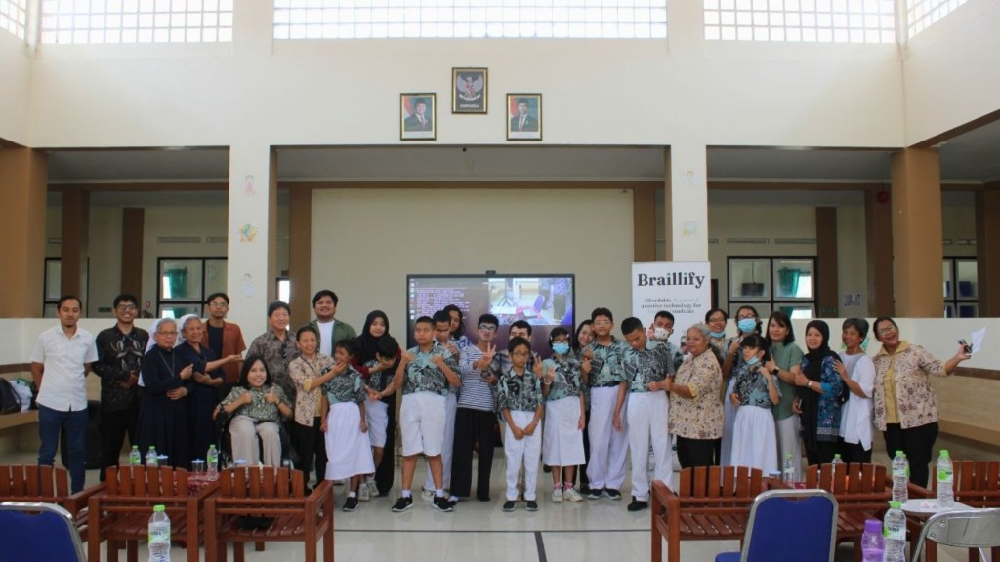
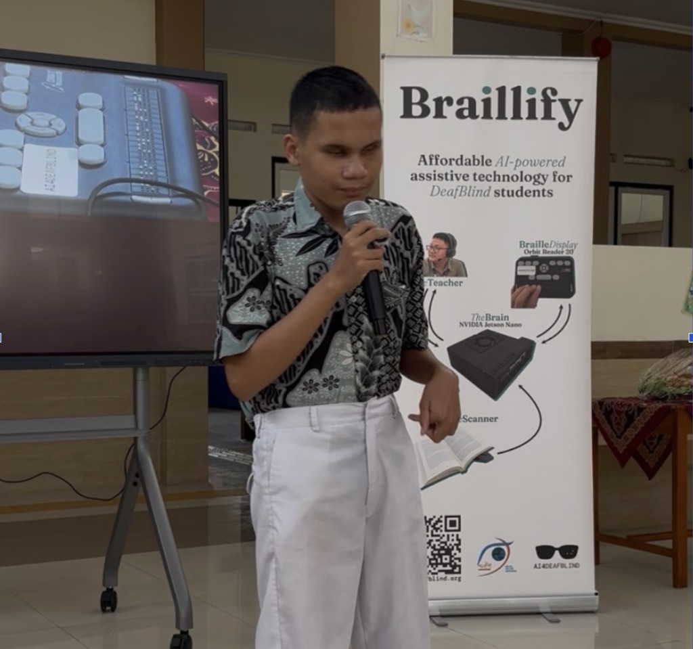
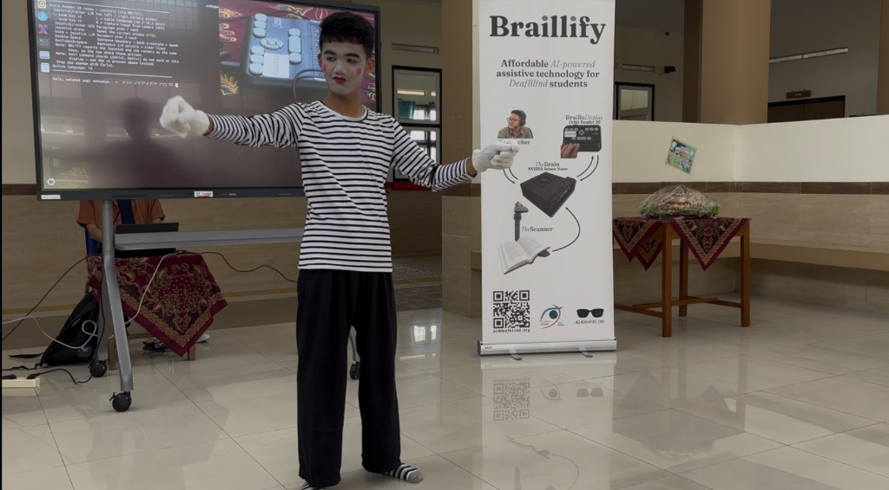
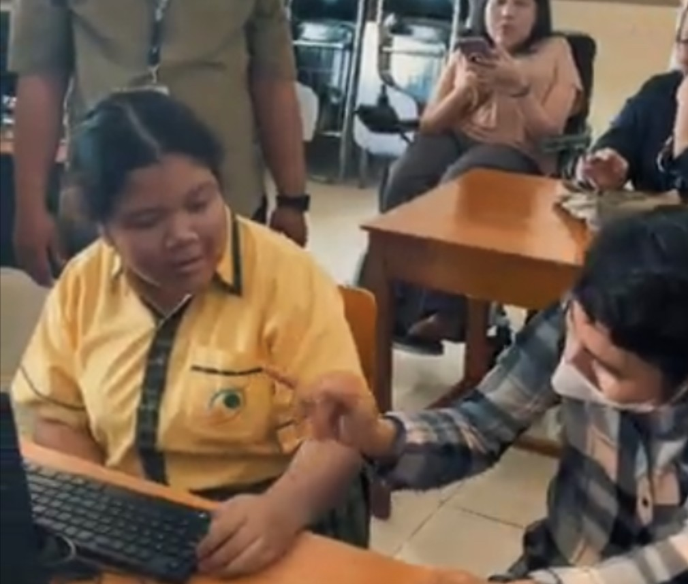
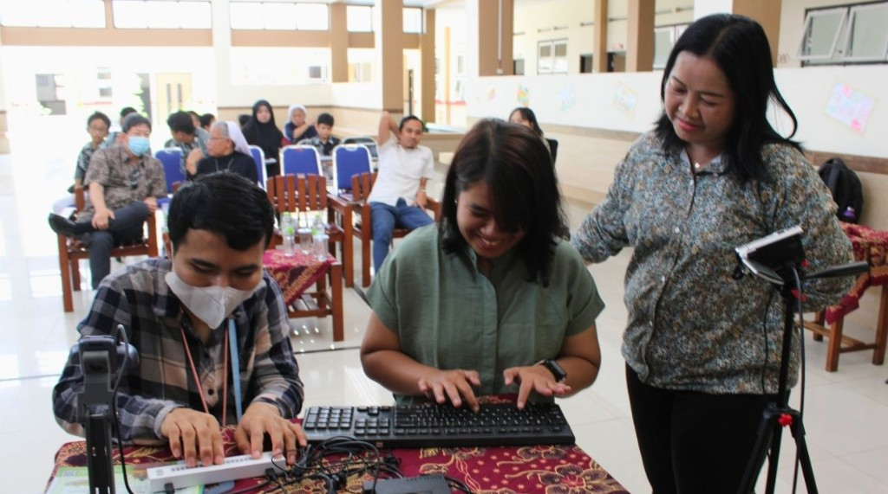
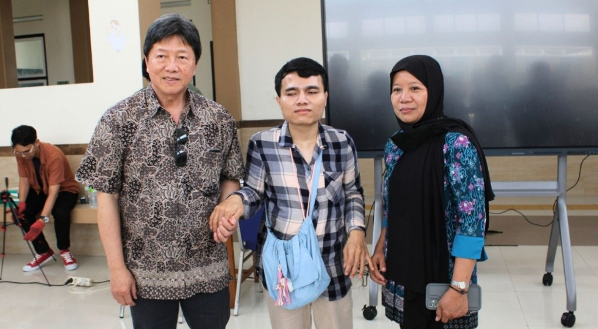
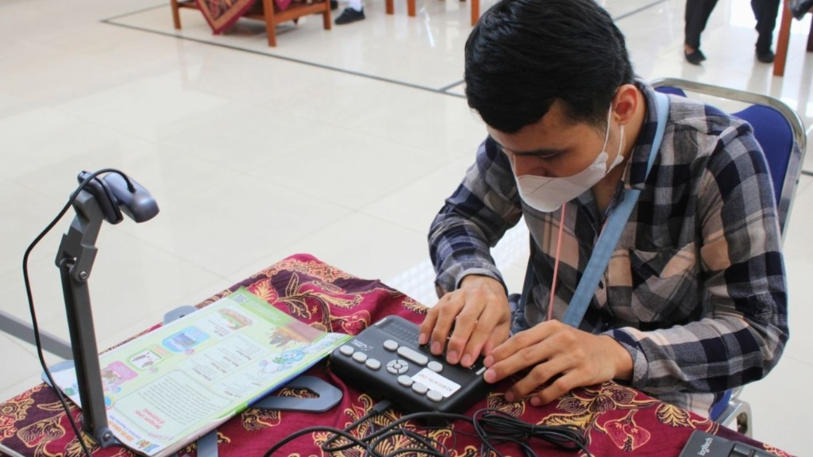
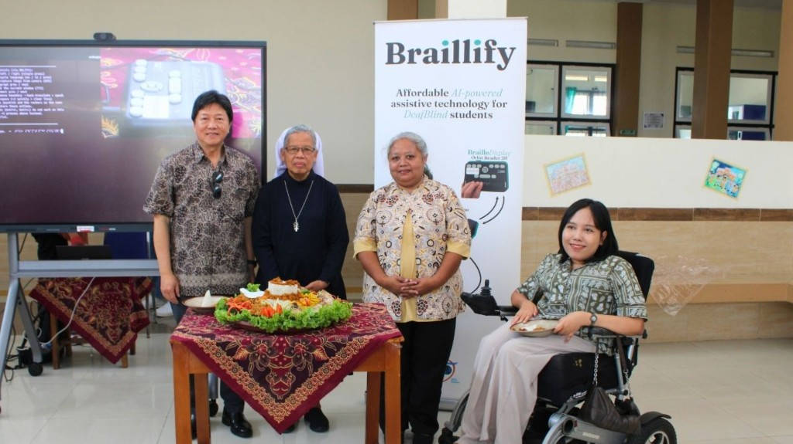

The grand opening of the Digital Braille Library at Helen Keller Indonesia in Yogyakarta went far beyond what we hoped for. Students sang, parents laughed, and a DeafBlind graduate held a conversation that filled the room with applause. Here is what happened, and where we are going next.
A Celebration of Students
The program began with the Indonesian national anthem and an opening prayer from Sister Marga. Then the students took the stage.
Abed, a blind middle school student, sang two songs with a remarkable voice. We learned afterward that he recently won 3rd place in a voice competition. Refan, a Deaf middle schooler, performed a pantomime that recalled Charlie Chaplin and held the audience’s attention from start to finish.



Braillify in Action: Live Captions and Braille Translation
Braillify is our offline assistive technology for DeafBlind and Deaf students. It turns speech into live captions and Braille, and it lets students reply using Braille keyboards. It needs no internet connection.
In the demonstration, Handaka, a DeafBlind recent graduate, and Nikita, a Deaf high school student, had a friendly conversation with their teacher, Mr. Yoga. When the live captions appeared on the big screen, the audience applauded. Many of them were seeing for the first time how a conversation like this could work. Braillify also translated Braille to speech at the same time, so everyone could follow along.


Parents Join the Conversation
We then invited parents to use Braillify to talk with Handaka themselves. Seeing their laughter and joy was one of the most moving moments of the day.

From Printed Book to Braille in Real Time
Mr. Yoga chose a history book about Indonesia’s Founding Fathers and used Braillify to scan it and translate the pages into Braille. Handaka then typed his understanding of the text on Perkins Keys connected to an Orbit 20 Braille display. His response drew multiple rounds of applause.
This is what the Digital Braille Library is for. A printed book that was once out of reach becomes something a DeafBlind student can read and respond to independently.

Why This Matters
In my opening speech, I shared my hope that Braillify will motivate students to read more books on their own and increase their connections and engagement with the people around them.
Sister Patricia’s remarks touched all of us. She said it must be a divine calling for a group of people in America to spend their valuable hours and expertise helping DeafBlind children in Yogyakarta.

Thank You to Our Donors
We are grateful to the two generous donors who helped complete the Digital Braille Library at Helen Keller Indonesia, with 5 Braillify units deployed. We are also deeply thankful to another donor who wants to sponsor the next school in Yogyakarta.
What Comes Next: Schools Across Java
Yogyakarta is the first step. We plan to expand to four more cities in Java: Jakarta, Bandung, Surabaya, and Semarang. Across these cities there are 365 schools of the blind. In this first round, we will raise the funds needed to bring the Digital Braille Library to the top 10 schools in each city.
Outside Java, Indonesia has 32 more provinces. Each one needs further research into its schools for the blind, so we can decide how best to roll out the libraries and make the greatest impact.
Help Bring the Digital Braille Library to the Next Schools
You have seen what one library can do: a DeafBlind student reading a history book on his own, and parents sharing a conversation with their son. With your help, students in Yogyakarta, Jakarta, Bandung, Surabaya, and Semarang can have the same experience.
One Braillify unit costs USD 2,000. The refreshable Braille display, which is imported, is the largest part of that cost.
Why you can give with confidence
- Your gift is tax-deductible to the extent allowed by law. AI4DeafBlind is a 501(c)(3) project under our fiscal sponsor, FSA, which approved our application and receives donations on our behalf.
- Any donation matters and counts toward helping DeafBlind children to read, write, and connect and engage with their community.
- Your gift goes to a named school. When you give through AI4DeafBlind.org and designate Helen Keller Indonesia, 100% goes to purchasing and deploying Braillify units for the school.
- You will see the results. We share photos, videos, and field-test updates from the schools, as in this post.
- We plan carefully. We research each school and region before we roll out, and we prioritize schools that work toward their own sustainable funding, so every library keeps serving students over time.
Donate at AI4DeafBlind.org and designate your gift to the school or city you want to support. Donate now.
Cannot give right now? Share this story. Every share helps us find the next supporter.